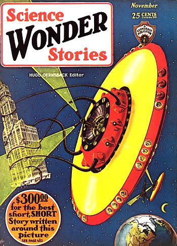

Henri Pensa suggère que les "météores" observés 3 nuits de suite au-dessus des montagnes de Rhodez soient des
signaux envoyés par Mars"Mars Signals Are Again
Reported", Intelligencer de Edwardsville (Illinois), 25 janvier 1929, p. 2.
A Velp (Pays Bas), observation au nord-est d'une
boule de feu suivie plusieurs autres plus petites et d'une trainée rougeâtre
"De Vuurbol", Het Vaderland (Pays Bas), édition du soir, 13 mars 1929.
Photo
prise en avril par Edward Pline
A Ward (Colorado) où vit Edward Pline avec sa famille, ce dernier s'apprête à
photographier la scierie, quand intervient ce qu'il décrira comme un beuglement tonitruant terrible alors
qu'une chose ronde aussi grande qu'un très gros rocher se déplace en l'air au-dessus des gens. Aucun des
employés de la scierie ne voit l'objet, mais ils entendent tous le son et sentirent le sol frisonner. Pline
décède quelques années seulement après l'incident Hetty Pline, fille de Edward
Pline, photographe.
A 250 miles environ à l'ouest des Hébrides externes, ou à 300 miles à l'ouest la
côte écossaise ouest (58,10 nord et 14,30 ouest), un chalutier britannique voit passer, hors de toute limite des
vols d'essais de l'époque, un avion se dirigeant vers l'est
"Trawler
Sights an Airplane Flying Far West of Scotch Coast", Daily Northwestern de Oshkosh (WI), 20 avril 1929, p. 1"Report Aiplane Out on
Atlantic", Lincoln (NE) Evening State Journal, samedi 20 avril 1929, p. 1"Mystery Plane Is
Sighted Over North Atlantic", Gazette de Billings (Montana), 21 avril 1929.
A 500 miles des îles Açores, un navire de ligne observe un
phénomène lumineux qu'il prend pour un avion
"Captain of
Liner Tells of Sighting Mystery Airplane", Herald de Syracuse (New York), 1er juin 1929.
 Couverture
de Science Wonder Stories n° 6 de 11
Collection Les Treece-Sainclair < UFOPOP
A Fermeneuve (Canada), M. Levis Brosseau (20 ans) rentre
chez lui quand il voit 1 objet sombre avec une lumière jaune. Son cheval devient très nerveux. A moins de 6 m de
l'objet 4 ou 5 silhouettes naines courent dans tous les sens. Il entend leurs voix enfantines aiguës puis voit
l'objet sombre s'en aller avec un son semblable à celui d'une machine, et un déplacement d'air. Taille estimée
de l'objet : 15 m de diamètre et 5 m de haut
"Fermeneuve, 15 juin 1929" in "Observations canadiennes d'hier et d'aujourd'hui", Phénomènes
Spatiaux n° 18, décembre 1968, pp. 17-22.
A Vienne (Autriche), article sur la possibilité de
découverte d'autres mondes habités
"Konnen win bewohnte Welter
entolecken?", Wiener Bilder, 16 juin 1929.
A Robsart (Saskatchewan, Canada), 5 personnes, dont M. Einar Rostivold, voient 1
énorme boule dont émane 1 lumière aux couleurs ardentes. Cela se passe à 25 km de cette ville. Elle atterrit
lentement, s'évanouit graduellement après avoir illuminé la région entière pendant 30 mn
Fate, janvier 1958.
(1929, 1930 ou 1935) A
Casablanca, Marcel Clairac, Conseiller (H) de la Cour de
Rabat, rapport du 11/12/1969, Jean Clairac, pilote de la ligne Latécoère Toulouse-Cap Juby, observe ,durant 10
mn à haute altitude, à la verticale des rues Marseille et Bouskoura, 20 gros cigares de la taille d'un zeppelin,
progressant d'est en ouest assez rapidement en formation triangulaire, pointe en avant
BSAFLDLN 329.
Couverture de Science Wonder Stories cette mois-là
{kind=link}